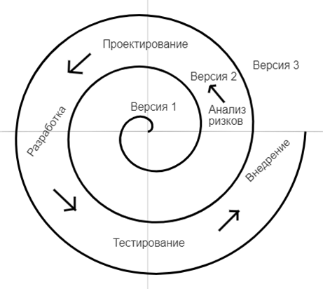

Спиральная модель

Спиральная модель представляет собой итерационный подход к разработке программного обеспечения, при котором команда проекта несколько раз проходит через фазы жизненного цикла разработки программного обеспечения. Каждый цикл включает анализ рисков, анализ требований, проектирование, реализацию, тестирование и оценку. Спиральная модель подходит для проектов с высоким уровнем риска и неопределенности